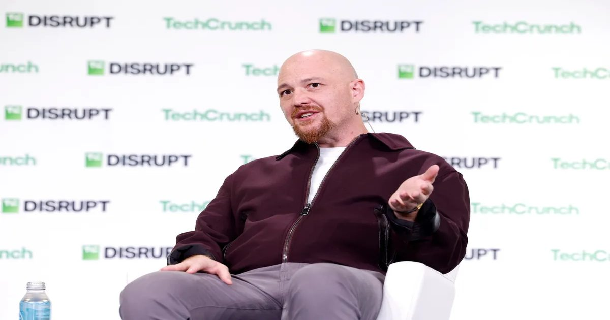

По словам генерального директора, Replit делает OpenAI своим дефолтом по сравнению с Anthropic
На выходных Масад уточнил, что OpenAI заменит Anthropic в качестве поставщика моделей по умолчанию.
Клод по-прежнему будет доступен клиентам на платформе.